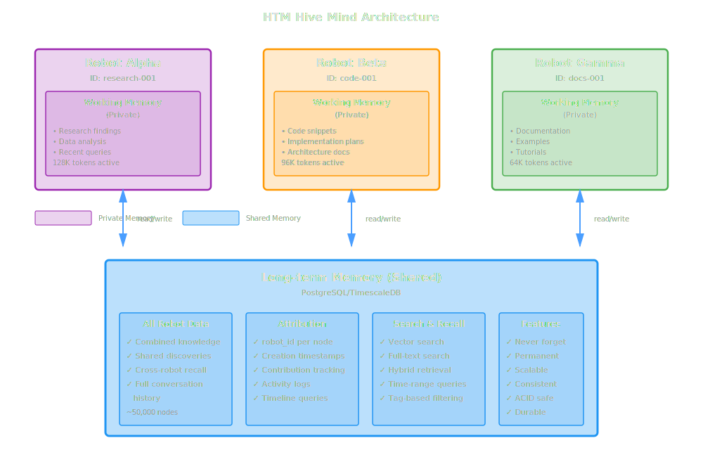

Multi-Robot Usage¶
HTM's "hive mind" architecture enables multiple robots to share knowledge through a common long-term memory. This guide covers setting up multi-robot systems, attribution tracking, and collaboration patterns.
Understanding the Hive Mind¶
In HTM, all robots share the same long-term memory database but maintain separate working memories:

Key Principles:
- Shared Knowledge: All memories are accessible to all robots
- Private Working Memory: Each robot has its own active context
- Full Attribution: Track which robot added each memory
- Collective Intelligence: Robots learn from each other's experiences
Setting Up Multiple Robots¶
Basic Multi-Robot Setup¶
# Robot 1: Research Assistant
research_bot = HTM.new(
robot_name: "Research Assistant",
working_memory_size: 128_000
)
# Each robot gets a unique robot_id automatically
# Robot 2: Code Helper
code_bot = HTM.new(
robot_name: "Code Helper",
working_memory_size: 128_000
)
# Robot 3: Documentation Writer
docs_bot = HTM.new(
robot_name: "Docs Writer",
working_memory_size: 64_000
)
# Each robot can access shared knowledge through the shared database
research_bot.remember(
"Research shows PostgreSQL outperforms MongoDB for ACID workloads",
tags: ["research", "database:comparison"]
)
# Code bot can access research findings (shared long-term memory)
findings = code_bot.recall(
"database performance",
timeframe: "last hour"
)
# Docs bot can document findings
docs_bot.remember(
"PostgreSQL performance documented based on research findings",
tags: ["documentation", "database"],
metadata: { source: "research" }
)
Robot Identification¶
Naming Strategies¶
Choose a consistent naming strategy for robot identification:
# Strategy 1: Persistent Robot (recommended for production)
# Use descriptive names - robot_id is assigned automatically
persistent_bot = HTM.new(
robot_name: "Production Assistant"
)
puts "Robot ID: #{persistent_bot.robot_id}" # e.g., 1
puts "Robot Name: #{persistent_bot.robot_name}" # "Production Assistant"
# Strategy 2: Session-based Robot (for temporary workflows)
session_id = SecureRandom.uuid[0..7]
session_bot = HTM.new(
robot_name: "Session #{session_id}"
)
# Strategy 3: User-specific Robot
user_id = "alice"
user_bot = HTM.new(
robot_name: "#{user_id}'s Assistant"
)
Naming Conventions
Use descriptive robot_name values to identify robots:
- Production robots: "Production Assistant", "API Helper"
- User robots: "Alice's Assistant", "User 123 Bot"
- Session robots: "Session abc123", "Temp Session"
- Team robots: "Engineering Reviewer", "QA Bot"
Robot Registry¶
All robots are automatically registered in the database:
# Robots are registered when created
bot = HTM.new(robot_name: "My Bot")
puts "Registered with ID: #{bot.robot_id}"
# Query robot registry using ActiveRecord
puts "Registered robots:"
HTM::Models::Robot.order(last_active_at: :desc).each do |robot|
puts "#{robot.name} (ID: #{robot.id})"
puts " Created: #{robot.created_at}"
puts " Last active: #{robot.last_active_at}"
puts
end
Attribution Tracking¶
Who Said What?¶
Track which robot contributed which memories using the robot_nodes join table:
# Add memories from different robots
alpha = HTM.new(robot_name: "Alpha")
beta = HTM.new(robot_name: "Beta")
alpha.remember("Alpha's insight about caching", tags: ["caching"])
beta.remember("Beta's approach to testing", tags: ["testing"])
# Query memories linked to a specific robot via RobotNode
def memories_by_robot(robot_id)
HTM::Models::RobotNode.where(robot_id: robot_id)
.includes(:node)
.map { |rn| rn.node.attributes }
end
alpha_memories = memories_by_robot(alpha.robot_id)
puts "Alpha contributed #{alpha_memories.length} memories"
Tracking Contributions¶
Query which robots have contributed to specific topics:
# Find nodes matching a topic and see which robots contributed
def robots_discussing(topic)
# Get matching nodes
nodes = HTM::Models::Node.where("content ILIKE ?", "%#{topic}%")
# Count contributions by robot
robot_counts = Hash.new(0)
nodes.each do |node|
node.robot_nodes.each do |rn|
robot = HTM::Models::Robot.find(rn.robot_id)
robot_counts[robot.name] += 1
end
end
robot_counts
end
breakdown = robots_discussing("PostgreSQL")
puts "Robots that discussed PostgreSQL:"
breakdown.each do |robot_name, count|
puts " #{robot_name}: #{count} mentions"
end
Memory Timeline¶
See the chronological contributions across robots:
# Get recent nodes with robot attribution
def memory_timeline(topic, limit: 50)
HTM::Models::Node
.where("content ILIKE ?", "%#{topic}%")
.order(created_at: :desc)
.limit(limit)
.includes(:robot_nodes)
end
timeline = memory_timeline("architecture decisions", limit: 50)
puts "Architecture discussion timeline:"
timeline.each do |node|
robot_ids = node.robot_nodes.map(&:robot_id)
robots = HTM::Models::Robot.where(id: robot_ids).pluck(:name)
puts "#{node.created_at} - #{robots.join(', ')}"
puts " #{node.content[0..100]}..."
puts
end
Collaboration Patterns¶
Pattern 1: Specialized Roles¶
Each robot has a specific role and expertise:
class MultiRobotSystem
def initialize
@researcher = HTM.new(robot_name: "Researcher")
@developer = HTM.new(robot_name: "Developer")
@reviewer = HTM.new(robot_name: "Reviewer")
end
def process_feature_request(feature)
# 1. Researcher gathers requirements
@researcher.remember(
"Research findings for #{feature}",
tags: ["research", feature],
metadata: { category: "fact", priority: "high" }
)
# 2. Developer recalls research and implements
research = @developer.recall(
"research #{feature}",
timeframe: "last hour"
)
@developer.remember(
"Implementation plan based on research",
tags: ["implementation", feature],
metadata: { category: "decision", priority: "critical" }
)
# 3. Reviewer checks work
work = @reviewer.recall(feature, timeframe: "last hour")
@reviewer.remember(
"Code review findings",
tags: ["review", feature],
metadata: { category: "context" }
)
end
end
system = MultiRobotSystem.new
system.process_feature_request("user-authentication")
Pattern 2: Shift Handoff¶
Robots pass context between shifts:
class ShiftHandoff
def initialize
@current_shift = nil
end
def start_shift(shift_name)
@current_shift = HTM.new(robot_name: "#{shift_name} Bot")
# Recall context from previous shift
handoff = @current_shift.recall(
"shift handoff urgent",
timeframe: "last 24 hours",
strategy: :hybrid,
limit: 20
)
puts "#{shift_name} shift starting"
puts "Received #{handoff.length} items from previous shift"
handoff
end
def end_shift(summary)
# Document shift handoff
@current_shift.remember(
summary,
tags: ["shift-handoff", "urgent"],
metadata: { category: "context", priority: "critical" }
)
puts "Shift handoff documented"
end
end
# Usage
handoff = ShiftHandoff.new
# Morning shift
morning = handoff.start_shift("Morning")
# ... do morning work
handoff.end_shift("Three critical bugs fixed, deploy scheduled for 2pm")
# Afternoon shift
afternoon = handoff.start_shift("Afternoon")
# ... receives morning's summary
Pattern 3: Expert Consultation¶
Specialized experts provide knowledge:
class ExpertSystem
def initialize
@experts = {
database: HTM.new(robot_name: "Database Expert"),
security: HTM.new(robot_name: "Security Expert"),
performance: HTM.new(robot_name: "Performance Expert")
}
@general = HTM.new(robot_name: "General Assistant")
end
def consult(topic)
# Determine which expert to consult
expert_type = determine_expert(topic)
expert = @experts[expert_type]
# Get expert knowledge (use raw: true for full node data)
knowledge = expert.recall(
topic,
timeframe: "all time",
strategy: :hybrid,
limit: 10,
raw: true
)
# General assistant learns from expert
knowledge.each do |k|
@general.remember(
"Learned from #{expert_type} expert: #{k['content']}",
tags: ["learned", expert_type.to_s],
metadata: { category: "fact", source_id: k['id'] }
)
end
knowledge
end
private
def determine_expert(topic)
# Simple keyword matching
case topic.downcase
when /database|sql|query/
:database
when /security|auth|encryption/
:security
when /performance|speed|optimization/
:performance
else
:database # default
end
end
end
system = ExpertSystem.new
knowledge = system.consult("PostgreSQL query optimization")
Pattern 4: Collaborative Decision Making¶
Multiple robots contribute to decisions:
class CollaborativeDecision
def initialize(topic)
@topic = topic
@participants = []
end
def add_participant(name, role)
bot = HTM.new(robot_name: "#{name} (#{role})")
@participants << { name: name, role: role, bot: bot }
bot
end
def gather_input(bot, opinion)
bot.remember(
opinion,
tags: ["decision", @topic, "opinion"],
metadata: { category: "context", priority: "high" }
)
end
def make_decision(decision_maker)
# Recall all opinions
opinions = decision_maker.recall(
"decision #{@topic} opinion",
timeframe: "last hour",
strategy: :hybrid,
limit: 50
)
puts "#{decision_maker.robot_name} considering:"
opinions.each do |opinion|
puts "- #{opinion[0..100]}..."
end
# Document final decision
decision_maker.remember(
"Final decision on #{@topic} after considering team input",
tags: ["decision", @topic, "final"],
metadata: { category: "decision", priority: "critical" }
)
end
end
# Usage
decision = CollaborativeDecision.new("database-choice")
# Gather input
developer = decision.add_participant("Alice", "Developer")
decision.gather_input(developer, "PostgreSQL for reliability")
architect = decision.add_participant("Bob", "Architect")
decision.gather_input(architect, "PostgreSQL for ACID compliance")
dba = decision.add_participant("Carol", "DBA")
decision.gather_input(dba, "PostgreSQL for operational maturity")
# Make decision
lead = decision.add_participant("Dave", "TechLead")
decision.make_decision(lead)
Shared vs Private Knowledge¶
Sharing Strategies¶
Control what gets shared using tags:
class SmartSharing
def initialize(robot_name)
@htm = HTM.new(robot_name: robot_name)
@private_tag = "private:#{@htm.robot_id}"
end
def add_shared(value, **opts)
# Shared with all robots - use "shared" tag
@htm.remember(value,
tags: (opts[:tags] || []) + ["shared"],
metadata: opts[:metadata] || {}
)
end
def add_private(value, **opts)
# Private to this robot - use robot-specific tag
@htm.remember(value,
tags: (opts[:tags] || []) + [@private_tag],
metadata: opts[:metadata] || {}
)
end
def recall_shared(topic)
# Query with shared tag filter
@htm.recall(
"shared #{topic}",
timeframe: "all time",
strategy: :hybrid,
query_tags: ["shared"]
)
end
def recall_private(topic)
# Query with private tag filter
@htm.recall(
topic,
timeframe: "all time",
strategy: :hybrid,
query_tags: [@private_tag]
)
end
end
# Usage
bot1 = SmartSharing.new("Bot 001")
bot1.add_shared("Everyone should know this", metadata: { category: "fact" })
bot1.add_private("Private thought", metadata: { category: "context" })
bot2 = SmartSharing.new("Bot 002")
shared = bot2.recall_shared("fact") # Can see shared content
private = bot2.recall_private("thought") # Won't see bot1's private thoughts
Cross-Robot Queries¶
Finding Robot Activity¶
# Get all robots and their activity using ActiveRecord
def get_robot_activity
HTM::Models::Robot.all.map do |robot|
memory_count = robot.robot_nodes.count
last_memory = robot.robot_nodes.maximum(:last_remembered_at)
{
id: robot.id,
name: robot.name,
memory_count: memory_count,
last_memory: last_memory,
last_active_at: robot.last_active_at
}
end.sort_by { |r| r[:last_active_at] || Time.at(0) }.reverse
end
# Display activity
robots = get_robot_activity
puts "Robot Activity Report:"
robots.each do |r|
puts "\n#{r[:name]} (#{r[:id]})"
puts " Memories: #{r[:memory_count]}"
puts " Last memory: #{r[:last_memory]}"
puts " Last active: #{r[:last_active_at]}"
end
Cross-Robot Search¶
def search_across_robots(topic, limit_per_robot: 5)
results = {}
HTM::Models::Robot.find_each do |robot|
# Find nodes linked to this robot via robot_nodes
node_ids = robot.robot_nodes.pluck(:node_id)
# Search within this robot's nodes using full-text search
robot_nodes = HTM::Models::Node
.where(id: node_ids)
.where("to_tsvector('english', content) @@ plainto_tsquery('english', ?)", topic)
.order(created_at: :desc)
.limit(limit_per_robot)
results[robot.name] = robot_nodes.map do |n|
{ id: n.id, content: n.content, created_at: n.created_at }
end
end
results
end
# Usage
results = search_across_robots("authentication")
results.each do |robot_name, memories|
puts "\n=== #{robot_name} ==="
memories.each do |m|
puts "- #{m[:content][0..80]}..."
end
end
Monitoring Multi-Robot Systems¶
Dashboard¶
class MultiRobotDashboard
def summary
total_robots = HTM::Models::Robot.count
total_memories = HTM::Models::Node.count
# Per-robot breakdown using ActiveRecord
breakdown = HTM::Models::Robot.all.map do |robot|
robot_node_ids = robot.robot_nodes.pluck(:node_id)
nodes = HTM::Models::Node.where(id: robot_node_ids)
{
name: robot.name,
memories: nodes.count,
last_contribution: robot.robot_nodes.maximum(:last_remembered_at)
}
end.sort_by { |r| -r[:memories] }
{
total_robots: total_robots,
total_memories: total_memories,
breakdown: breakdown
}
end
def print_summary
data = summary
puts "=== Multi-Robot System Dashboard ==="
puts "Total robots: #{data[:total_robots]}"
puts "Total memories: #{data[:total_memories]}"
puts "\nPer-robot breakdown:"
data[:breakdown].each do |robot|
puts "\n#{robot[:name]}"
puts " Memories: #{robot[:memories]}"
puts " Last contribution: #{robot[:last_contribution]}"
end
end
end
dashboard = MultiRobotDashboard.new
dashboard.print_summary
Best Practices¶
1. Clear Robot Roles¶
# Good: Clear, specific roles
researcher = HTM.new(robot_name: "Research Specialist")
coder = HTM.new(robot_name: "Code Generator")
# Avoid: Vague roles
bot1 = HTM.new(robot_name: "Bot 1")
2. Consistent Naming¶
# Good: Consistent naming scheme
class RobotFactory
def self.create(service, purpose)
HTM.new(robot_name: "#{service.capitalize} #{purpose.capitalize}")
end
end
api_assistant = RobotFactory.create("api", "assistant")
api_validator = RobotFactory.create("api", "validator")
3. Attribution in Content¶
# Include attribution in the content itself
bot.remember(
"Research by #{bot.robot_name}: PostgreSQL outperforms MongoDB",
tags: ["research", "database:comparison"],
metadata: { category: "fact", priority: "high" }
)
4. Regular Reconciliation¶
# Periodically sync understanding across robots
def sync_robots(*robots)
# Find recent high-priority memories using metadata
shared_knowledge = robots.first.recall(
"important shared",
timeframe: "last 24 hours",
strategy: :hybrid,
limit: 50,
metadata: { priority: "high" }
)
puts "Syncing #{shared_knowledge.length} important memories across #{robots.length} robots"
end
5. Clean Up Inactive Robots¶
def cleanup_inactive_robots(days: 30)
cutoff = Time.now - (days * 24 * 3600)
inactive = HTM::Models::Robot.where("last_active_at < ?", cutoff)
puts "Inactive robots (last active > #{days} days):"
inactive.each do |robot|
puts "- #{robot.name} (#{robot.id})"
end
end
cleanup_inactive_robots(days: 90)
Complete Example¶
require 'htm'
# Create a multi-robot development team
class DevTeam
def initialize
@analyst = HTM.new(robot_name: "Requirements Analyst")
@developer = HTM.new(robot_name: "Senior Developer")
@tester = HTM.new(robot_name: "QA Tester")
end
def process_feature(feature_name)
puts "\n=== Processing Feature: #{feature_name} ==="
# 1. Analyst documents requirements
puts "\n1. Analyst gathering requirements..."
@analyst.remember(
"Requirements for #{feature_name}: Must support OAuth2",
tags: ["requirements", feature_name],
metadata: { category: "fact", priority: "critical" }
)
# 2. Developer recalls requirements and designs
puts "\n2. Developer reviewing requirements..."
requirements = @developer.recall(
"requirements #{feature_name}",
timeframe: "last hour"
)
puts "Found #{requirements.length} requirements"
@developer.remember(
"Design for #{feature_name} based on requirements",
tags: ["design", feature_name],
metadata: { category: "decision", priority: "critical" }
)
# 3. Tester recalls everything and creates test plan
puts "\n3. Tester creating test plan..."
context = @tester.recall(
feature_name,
timeframe: "last hour",
strategy: :hybrid
)
puts "Tester reviewed #{context.length} items"
@tester.remember(
"Test plan for #{feature_name}",
tags: ["testing", feature_name],
metadata: { category: "context", priority: "high" }
)
# 4. Show collaboration timeline
puts "\n4. Collaboration summary:"
nodes = HTM::Models::Node
.where("content ILIKE ?", "%#{feature_name}%")
.order(created_at: :asc)
.includes(:robot_nodes)
nodes.each do |node|
robot_ids = node.robot_nodes.map(&:robot_id)
robots = HTM::Models::Robot.where(id: robot_ids).pluck(:name)
puts "- #{robots.join(', ')}: #{node.content[0..50]}..."
end
# 5. Show attribution
puts "\n5. Who contributed:"
robot_counts = Hash.new(0)
nodes.each do |node|
node.robot_nodes.each do |rn|
robot = HTM::Models::Robot.find(rn.robot_id)
robot_counts[robot.name] += 1
end
end
robot_counts.each do |robot_name, count|
puts "- #{robot_name}: #{count} memories"
end
end
end
# Run the team
team = DevTeam.new
team.process_feature("oauth-integration")
Next Steps¶
- Context Assembly - Build context from multi-robot memories
- Long-term Memory - Understand the shared storage layer
- Search Strategies - Find relevant memories across robots